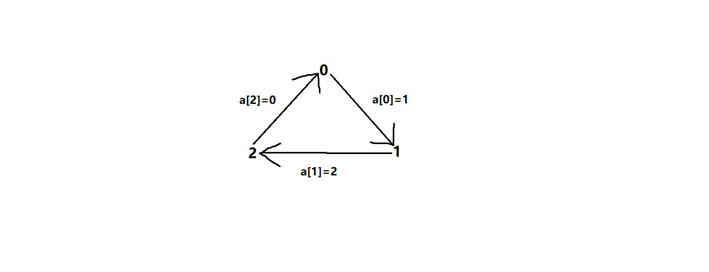
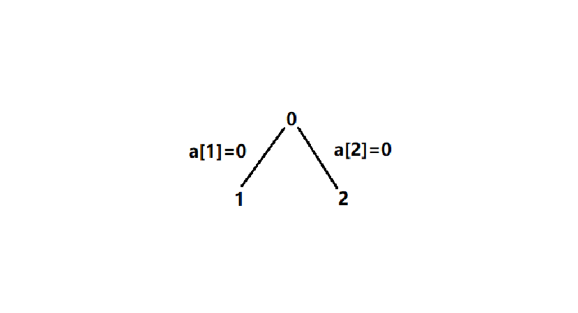

0. 前言
对于稀疏图(边较少)，用Kruskal(克鲁斯卡尔)算法求最小生成树，无疑是上上之选。
1. 最小生成树
什么是最小生成树？一个连通图的极小连通子图 对不起，请先学好黄老师的离散数学。
2. 并查集
并查集是Kruskal算法的关键。
它代表着集合中的等价类、图中的连通点。
在计算机中，其数据结构为数组。那数组应该如何表示等价类呢？
假设，数组下标对应一组集合：(0,1,2,3,4,5)。其中，[0,1,2]、[3]、[4,5]都是等价类。用数组来表示这种关系的方法有很多种，例如：
(1) 环形(线形)。设大集合为数组a[6]。等价类[0,1,2]可以表示为：a[2]=1, a[1]=0, a[0]=2。

(2) 树形。[0,1,2]可以表示为：a[2]=0, a[1]=0, a[0]=0。0是等价类树的头结点。

3. Kruskal算法
克鲁斯卡尔的求解过程为：
(1) 对图中的边按权重从小到大排序；
(2) 遍历排序好的边，如果该边纳入到当前的边集合中(一开始集合中边为0)，不构成圈，那就将该边纳入到边集合中来；若纳入进来会构成圈，那就跳过该边。直到边集合中边数为n-1(n为顶点数)，遍历终止。
(3) 用并查集来判断是否成圈，最后得到的边集合就是最小生成树。
克鲁斯卡尔又称避圈法求最小生成树。
4. 示例
csp-最优灌溉
问题描述：小刘承包了很多片麦田，为了灌溉这些麦田，小刘在第一个麦田挖了一口很深的水井，所有的麦田都从这口井来引水灌溉。 为了灌溉，小刘需要建立一些水渠，以连接水井和麦田，小刘也可以利用部分麦田作为“中转站”，利用水渠连接不同的麦田，这样只要一片麦田能被灌溉，则与其连接的麦田也能被灌溉。现在小刘知道哪些麦田之间可以建设水渠和建设每个水渠所需要的费用（注意不是所有麦田之间都可以建立水渠）。请问灌溉所有麦田最少需要多少费用来修建水渠。
输入格式：输入的第一行包含两个正整数n, m，分别表示麦田的片数和小刘可以建立的水渠的数量。麦田使用1, 2, 3, ……依次标号。 接下来m行，每行包含三个整数ai, bi, ci，表示第ai片麦田与第bi片麦田之间可以建立一条水渠，所需要的费用为ci。
输出格式：输出一个整数，表示灌溉所有麦田所需要的最小费用，及水渠连接说明。
问题分析：这个问题可以用最小生成树算法实现。
输入样例:
4 4
1 2 1
2 3 4
2 4 2
3 4 3
输出样例:
6
建立以下3条水渠：麦田1与麦田2、麦田2与麦田4、麦田4与麦田3。
显然，这是一个最小生成树问题。
求解代码如下：
1 |
|